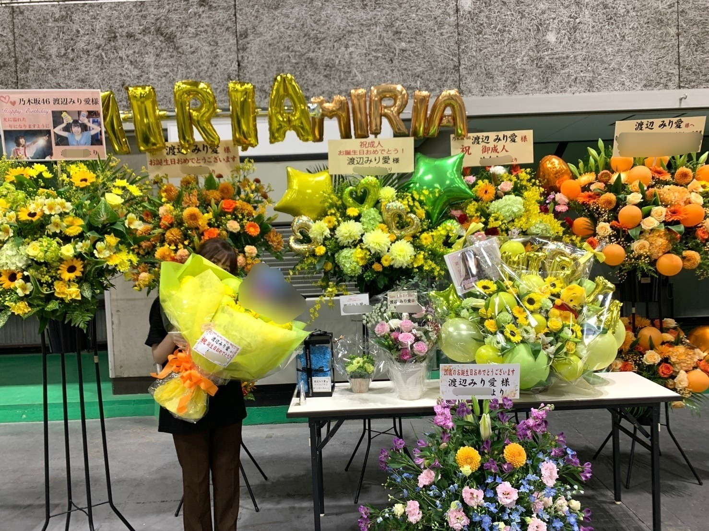
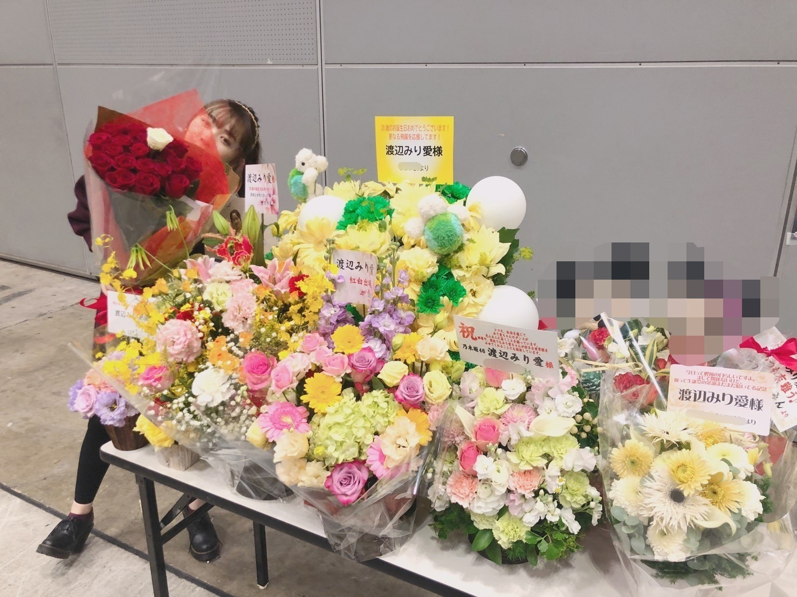
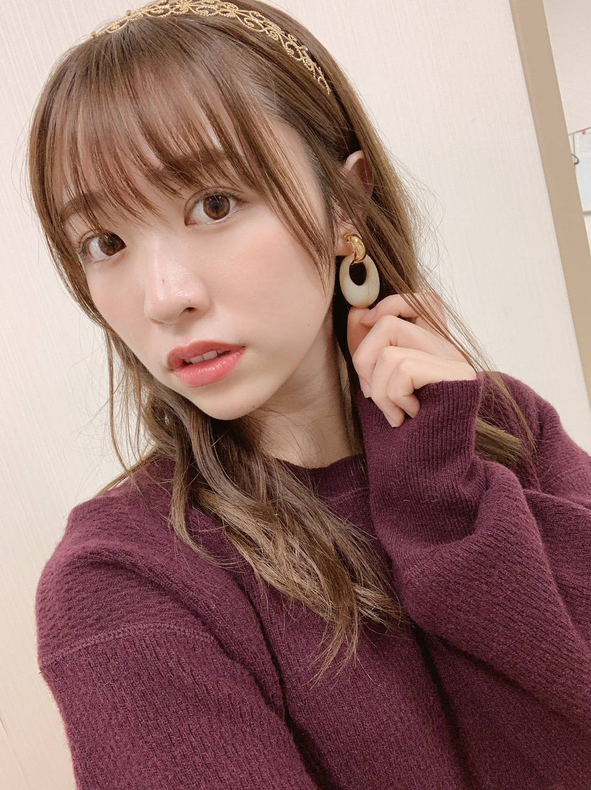

2019/1207Sat乳製品

こんばんは！
FNS歌謡祭第一夜、見て下さった皆様
ありがとうございました！
円卓に座って色々なアーティストの方のライブを
生で観れて感じれて、素敵な空間でした。

11月17日 大阪個握

11月24日 幕張個握
レーンの前に行くと毎回テーマが違った
色とりどりの花が出迎えてくれてて
朝一に見るというのが一つの楽しみ。
いつもありがとうございます！

メンバーやヘアメイクさんに
「最近、背縮んだ？」と真面目に言われてしまい
嘘だと思っていたら
本当に他のメンバーやスタッフさんに
沢山言われるから
信憑性増してしまって、不安になってます、、笑
次身長測るのが怖いよ、、笑

みり愛
2019/12/07 21:06
コメント(458)
可愛い好き
みり愛ちゃんブログ更新ありがとう〜
もう完全に冬ですね
朝はお布団から出たくない季節になりましたね(><)
お仕事が朝早いから布団から出るのが嫌で嫌で仕方ありません...
まあそんな自分に鞭打って毎日頑張ってお仕事いけてます(^o^)
あ、ここからお話が全然変わるのですが前回のブログのタイトルと今回のブログタイトル
合わせると美味しいですよね(*^^*)
度々京都に抹茶飲みに行ってます(*^_^*)
今度京都行く機会があれば是非
また会いに行くね〜
もう完全に冬ですね
朝はお布団から出たくない季節になりましたね(><)
お仕事が朝早いから布団から出るのが嫌で嫌で仕方ありません...
まあそんな自分に鞭打って毎日頑張ってお仕事いけてます(^o^)
あ、ここからお話が全然変わるのですが前回のブログのタイトルと今回のブログタイトル
合わせると美味しいですよね(*^^*)
度々京都に抹茶飲みに行ってます(*^_^*)
今度京都行く機会があれば是非
また会いに行くね〜
みり愛ちゃん！！ブログ更新待ってましたありがとう〜❁
お花たくさんだね〜
わたしもお花出してみたい！！
名古屋まであと1週間！握手楽しみだな〜(୨୧•͈ᴗ•͈)◞
前髪伸ばしてて前会ったときと雰囲気違うから気づいてくれるか不安だけども（笑）
身長縮んだかもしれないのはちょっと笑った（笑）
また測ったら結果聞かせてね！（笑）
お花たくさんだね〜
わたしもお花出してみたい！！
名古屋まであと1週間！握手楽しみだな〜(୨୧•͈ᴗ•͈)◞
前髪伸ばしてて前会ったときと雰囲気違うから気づいてくれるか不安だけども（笑）
身長縮んだかもしれないのはちょっと笑った（笑）
また測ったら結果聞かせてね！（笑）
みり愛ちゃん、こんばんは。
今度「背が縮んだ？」って言われたらこう返しましょう。「お前らがデカくなったんだよ(笑)」って。
今度「背が縮んだ？」って言われたらこう返しましょう。「お前らがデカくなったんだよ(笑)」って。
みり愛ちゃん今日もかわいいよ〜
きいちゃん推しだけど、みり愛ちゃんと握手する時いつも楽しくて楽しみにしてたよ！
早く会いたいから次のシングル出ないかな〜
待っててね
きいちゃん推しだけど、みり愛ちゃんと握手する時いつも楽しくて楽しみにしてたよ！
早く会いたいから次のシングル出ないかな〜
待っててね
可愛すぎ案件
みり愛ちゃんブログ更新ありがとう(^ ^)
FNS素敵でした〜
俺も最近会社の先輩に背縮んだ？って言われました笑
タイムリーすぎてびっくりしました笑
後みり愛ちゃん本当に大人っぽくなってきてて、ドキドキします(*´-`)
寒くなってきてるから、体調には気を付けてね！
それでは！
えーじ
FNS素敵でした〜
俺も最近会社の先輩に背縮んだ？って言われました笑
タイムリーすぎてびっくりしました笑
後みり愛ちゃん本当に大人っぽくなってきてて、ドキドキします(*´-`)
寒くなってきてるから、体調には気を付けてね！
それでは！
えーじ
ブログ更新ありがとう！
私も身長高くないのですが、やっぱり年に1回計るときは伸びていたい欲があるので今年は少しかかと浮かしました笑
来年が怖いよー！
体に気をつけて、頑張ってください！
私も身長高くないのですが、やっぱり年に1回計るときは伸びていたい欲があるので今年は少しかかと浮かしました笑
来年が怖いよー！
体に気をつけて、頑張ってください！
ブログ更新ありがとう！！もう12月入って、あと少しで1年終わるね。早いね〜。悔いなく終われるように頑張ろ！
乳製品。ちなみにR1ヨーグルトを毎日食べてるけど、みり愛は？
乳製品。ちなみにR1ヨーグルトを毎日食べてるけど、みり愛は？
みり愛ブログ更新ありがとう！
FNS歌謡祭、俺もあそこに座って見てみたいw
身長縮んだのかは今度確かめてみよっとw
最近、冷え込んでるから、体調には充分気をつけてね！
FNS歌謡祭、俺もあそこに座って見てみたいw
身長縮んだのかは今度確かめてみよっとw
最近、冷え込んでるから、体調には充分気をつけてね！
みり愛たんこんばんはー！FNS最高でした
ブログ更新ありがとう！
ついに名古屋の握手会まで1週間ですねー
前回握手したのは9月でもう待ちくたびれました
あれから3ヶ月も経ちましたよー
きっとみり愛ちゃんはサンタになってくれるんだろうと期待して待ってます！
ついに名古屋の握手会まで1週間ですねー
前回握手したのは9月でもう待ちくたびれました
あれから3ヶ月も経ちましたよー
きっとみり愛ちゃんはサンタになってくれるんだろうと期待して待ってます！
ブログ更新ありがとう！
テレビでみり愛を見てると本当美しいなぁ綺麗なダンスだと思うし、かっこよくて目で追っちゃうよね。
乃木坂を知らない人もテレビを見てあの子ダンス、、、って見てもらえれたら嬉しいなぁ。
お花のお写真もありがとう色が難しい色にしてもらったので気に入って貰えてたら嬉しいです。
身長のことは気にしないでいいと思うよ、小さくて可愛いのがみり愛だし、俺は小さいほうが可愛らしくていいと思うよ。縮んでもいいよ笑
それと報告、スペイベ当たったので行きますね〜
また報告しにいくかと思います〜
ほな！
テレビでみり愛を見てると本当美しいなぁ綺麗なダンスだと思うし、かっこよくて目で追っちゃうよね。
乃木坂を知らない人もテレビを見てあの子ダンス、、、って見てもらえれたら嬉しいなぁ。
お花のお写真もありがとう色が難しい色にしてもらったので気に入って貰えてたら嬉しいです。
身長のことは気にしないでいいと思うよ、小さくて可愛いのがみり愛だし、俺は小さいほうが可愛らしくていいと思うよ。縮んでもいいよ笑
それと報告、スペイベ当たったので行きますね〜
また報告しにいくかと思います〜
ほな！
ブログ更新ありがと
歌謡祭、握手会お疲れ様。
なんとなくやけど、
いきなりのオススメの曲紹介(笑)
UVERworldのRANGEって曲聴いてみて〜
UVERworldはかずみん詳しいから聴いてみるのもアリかも
またね
歌謡祭、握手会お疲れ様。
なんとなくやけど、
いきなりのオススメの曲紹介(笑)
UVERworldのRANGEって曲聴いてみて〜
UVERworldはかずみん詳しいから聴いてみるのもアリかも
またね
みり愛ちゃん、伸び代や…まだ成長期なんや…
オールナイトニッポンの2期生話
なんか知らないことばかりで2期生の苦労をたくさん知って感慨深かった。
2期生のドキュメンタリー作ってくれないかな…
なんか知らないことばかりで2期生の苦労をたくさん知って感慨深かった。
2期生のドキュメンタリー作ってくれないかな…
みりあは多分縮んでないよ～
この前握手会で
今は身長調整してこのぐらいに縮めてて
ほんとはこのぐらいあるんだよ！
って教えてもらったから(笑)
最近はちょっと調整間違えて縮め過ぎてたんだよきっと
この前握手会で
今は身長調整してこのぐらいに縮めてて
ほんとはこのぐらいあるんだよ！
って教えてもらったから(笑)
最近はちょっと調整間違えて縮め過ぎてたんだよきっと
みり愛ちゃん
こんばんわ。
幕張個握ありがとうございました。
ライブになかなか行けなくて
久しぶりにみり愛ちゃんに会えて
嬉しかったよ！
みり愛ちゃん
相変わらず、すごく可愛いかったよ！
身長は気にしない、気にしない。
そのままで十分だよ。
こんばんわ。
幕張個握ありがとうございました。
ライブになかなか行けなくて
久しぶりにみり愛ちゃんに会えて
嬉しかったよ！
みり愛ちゃん
相変わらず、すごく可愛いかったよ！
身長は気にしない、気にしない。
そのままで十分だよ。
ブログ更新ありがとう！
年末の歌番組にみり愛ちゃんが出てるから大好きな師走が特に充実してます(^^)
まだ大阪全握とMステとレコ大と紅白と楽しみがたくさん！
大阪全握終わりにみり愛推しで忘年会をやる予定です(^^)
みり愛ちゃんの歳で背は縮まないよっ!
年末の歌番組にみり愛ちゃんが出てるから大好きな師走が特に充実してます(^^)
まだ大阪全握とMステとレコ大と紅白と楽しみがたくさん！
大阪全握終わりにみり愛推しで忘年会をやる予定です(^^)
みり愛ちゃんの歳で背は縮まないよっ!
やっぱりみりあちゃんが躍るSingOutがいちばん楽しそうだなって感じたよ！
最近どんどんみりあちゃんのことをすきになっている気がして早く握手会で会いたいなぁと思ってるよ！次のシングルは沢山みりあちゃんに会えるといいな！
身長は縮んでてもまた伸びるかもしれないし希望は捨てないで！！！
最近どんどんみりあちゃんのことをすきになっている気がして早く握手会で会いたいなぁと思ってるよ！次のシングルは沢山みりあちゃんに会えるといいな！
身長は縮んでてもまた伸びるかもしれないし希望は捨てないで！！！
みり愛ちゃんこんばんわ！
ブログ更新ありがとう⸜❤︎⸝⸜❤︎⸝
FNSほんとに可愛かったしもう感動しました！
FNSもだけどベストアーティストも！！久々1期と2期だけで出ててしかもインフルエンサーみり愛ちゃん1列目で泣きました
これからも大好きです！応援してます
みり愛ちゃん推しのゆうなより
←認知して貰えると嬉しいです⸜❤︎⸝
ブログ更新ありがとう⸜❤︎⸝⸜❤︎⸝
FNSほんとに可愛かったしもう感動しました！
FNSもだけどベストアーティストも！！久々1期と2期だけで出ててしかもインフルエンサーみり愛ちゃん1列目で泣きました
これからも大好きです！応援してます
みり愛ちゃん推しのゆうなより
←認知して貰えると嬉しいです⸜❤︎⸝
みり愛さん、こんばんは。
ブログ、ちょっと久しぶりですね。忙しい中で書いてくれてありがとうございます。
私は健康診断の結果によると年々身長が縮んでいます。（笑）計測の時は叱られない程度に背伸びしているのに。
さて、このところ歌番組でみり愛さんがたくさん見られて私は幸せです。それに加えて、みり愛さんの表情が以前より優しく見えるので更に幸せです。
年末もお忙しいでしょうが、どうか健康にお過ごしください。
ブログ、ちょっと久しぶりですね。忙しい中で書いてくれてありがとうございます。
私は健康診断の結果によると年々身長が縮んでいます。（笑）計測の時は叱られない程度に背伸びしているのに。
さて、このところ歌番組でみり愛さんがたくさん見られて私は幸せです。それに加えて、みり愛さんの表情が以前より優しく見えるので更に幸せです。
年末もお忙しいでしょうが、どうか健康にお過ごしください。
みり愛ちゃんこんばんは
ブログ更新ありがとう！
最近は歌番組でみり愛ちゃんの輝く姿を沢山観れて嬉しいです。いつも一番輝いてるよ！！早く会いたいので来週の握手会が楽しみです。よろしくね！
ブログ更新ありがとう！
最近は歌番組でみり愛ちゃんの輝く姿を沢山観れて嬉しいです。いつも一番輝いてるよ！！早く会いたいので来週の握手会が楽しみです。よろしくね！
みり愛ちゃんへ
ちっちゃくなってもみり愛ちゃんはみり愛ちゃんだよ大好き
FNS見たよ！めっちゃ感動したよ〜正座して見たよ笑
みり愛ちゃんのパフォーマンス素敵でした！
ありがとう
たかすぎ
ちっちゃくなってもみり愛ちゃんはみり愛ちゃんだよ大好き
FNS見たよ！めっちゃ感動したよ〜正座して見たよ笑
みり愛ちゃんのパフォーマンス素敵でした！
ありがとう
たかすぎ
好き
ブログ更新ありがとう〜
モバメの髪色もめっちゃ可愛かったです
本格的に寒くなってるし体調気をつけてください
モバメの髪色もめっちゃ可愛かったです
本格的に寒くなってるし体調気をつけてください
みり愛ちゃん、かわいいねぇ〜。
モバメありがとう！楽しみに読ませてもらってます。
寒い日々が続いてるから気をつけてね！
モバメありがとう！楽しみに読ませてもらってます。
寒い日々が続いてるから気をつけてね！
みり愛ブログ更新ありがとう
握手会お疲れ様でした！
みり愛との握手は毎回楽しくていつも楽しみにして行きます！
ここだけの話、握手会がきっかけでみり愛を推すようになったんだよ笑
背が縮んだとしても可愛いから問題ないよ笑笑
次は名古屋で会おうね！
握手会お疲れ様でした！
みり愛との握手は毎回楽しくていつも楽しみにして行きます！
ここだけの話、握手会がきっかけでみり愛を推すようになったんだよ笑
背が縮んだとしても可愛いから問題ないよ笑笑
次は名古屋で会おうね！
こんばんは♪
二十歳になったばかりなんだからまだ縮むことはないとは思うんだけどねぇ。。。(^_^;)
ひょっとして周りがグルになってドッキリをしかけてるとか？Σ(･ω･ﾉ)ﾉ！
お気をつけあれ！(何に？)(ﾉ∀`)
ではまたー＼(*⌒0⌒)b
二十歳になったばかりなんだからまだ縮むことはないとは思うんだけどねぇ。。。(^_^;)
ひょっとして周りがグルになってドッキリをしかけてるとか？Σ(･ω･ﾉ)ﾉ！
お気をつけあれ！(何に？)(ﾉ∀`)
ではまたー＼(*⌒0⌒)b
みり愛たーーーーん＼(^o^)／お疲れ様でした
FNSの円卓は本当に憧れてる空間だな(｡>﹏<｡)
お疲れ様でした
そして、沢山の花に隠れてるみり愛は相変わらず可愛いよ(*´ω｀*)
握手会もお疲れ様でした
あっ、ニット姿のみり愛だよ(*´ω｀*)♡♡♡
身長縮んでもいつも小さくて可愛いよ＼(^o^)／
（あっ、別にバカにしてないよ（笑））
今後、身長教えてね(*´ω｀*)
これからも頑張って(/･ω･)/
ああ、みり愛たん可愛いなあ(｡>﹏<｡)♡♡♡
FNSの円卓は本当に憧れてる空間だな(｡>﹏<｡)
お疲れ様でした
そして、沢山の花に隠れてるみり愛は相変わらず可愛いよ(*´ω｀*)
握手会もお疲れ様でした
あっ、ニット姿のみり愛だよ(*´ω｀*)♡♡♡
身長縮んでもいつも小さくて可愛いよ＼(^o^)／
（あっ、別にバカにしてないよ（笑））
今後、身長教えてね(*´ω｀*)
これからも頑張って(/･ω･)/
ああ、みり愛たん可愛いなあ(｡>﹏<｡)♡♡♡
身長が縮むことあるのかなぁ？怖いなぁ。
でもどんどん大人っぽく美しくなっているから
良いんじゃないかな？
でもどんどん大人っぽく美しくなっているから
良いんじゃないかな？
FNSのパフォーマンス最高でした
ブログ更新ありがとう！
幕張の時はお花喜んでもらえて嬉しかったな〜
今年はもうみり愛と握手できないのが寂しい
来年もいっぱい握手出来たらいいな！
年末に向けて音楽番組でみり愛をいっぱい見つけられて幸せ。
体調管理に気をつけて今年も最後まで走り抜けてね！
応援してるよ〜
幕張の時はお花喜んでもらえて嬉しかったな〜
今年はもうみり愛と握手できないのが寂しい
来年もいっぱい握手出来たらいいな！
年末に向けて音楽番組でみり愛をいっぱい見つけられて幸せ。
体調管理に気をつけて今年も最後まで走り抜けてね！
応援してるよ〜
みり愛ちゃんブログ更新ありがとー！
FNS歌謡祭お疲れ様でした！
あの衣装みり愛ちゃんとっても似合ってて、かっこよかった！！
たくさん牛乳飲んでたくさん寝て身長が伸びるように頑張ってね！笑
また次のブログ更新楽しみにしてるね！
FNS歌謡祭お疲れ様でした！
あの衣装みり愛ちゃんとっても似合ってて、かっこよかった！！
たくさん牛乳飲んでたくさん寝て身長が伸びるように頑張ってね！笑
また次のブログ更新楽しみにしてるね！
みり愛ちゃん、今日もお疲れ様です＞＜ゞ
あは～ん♡
この綺麗な顔立ちが蓮加ちゃんの心を掴んで離さなのかしら～♡
私がみり愛ちゃんの事を"あんちゃん"呼びしたら
蓮加ちゃんに怒られるかな？(笑)
これからも、みり愛ちゃんと蓮加ちゃんが
どのようにして仲が進展していくか遠巻きながら見守っていこうと思います♡
幕張の花束を抱えているみり愛ちゃん、
良く漫画やアニメの一コマに出てくるシーンが脳内再生されちゃった！
そのテーマで写真一枚いかが？
『次身長測るのが怖いよ、、笑』
周りの人に同じ事を何回も言われて怯えているみたいだねー＞＜；
そんなに怯えて縮こまっては、本当に身長が縮むぞぉー(笑)
身長の不安なんか恐れる事なかれ！
みり愛ちゃんの心の中には、夢なる木が今でも伸びている！
さぁ！胸を張っていきまっしょい！
あは～ん♡
この綺麗な顔立ちが蓮加ちゃんの心を掴んで離さなのかしら～♡
私がみり愛ちゃんの事を"あんちゃん"呼びしたら
蓮加ちゃんに怒られるかな？(笑)
これからも、みり愛ちゃんと蓮加ちゃんが
どのようにして仲が進展していくか遠巻きながら見守っていこうと思います♡
幕張の花束を抱えているみり愛ちゃん、
良く漫画やアニメの一コマに出てくるシーンが脳内再生されちゃった！
そのテーマで写真一枚いかが？
『次身長測るのが怖いよ、、笑』
周りの人に同じ事を何回も言われて怯えているみたいだねー＞＜；
そんなに怯えて縮こまっては、本当に身長が縮むぞぉー(笑)
身長の不安なんか恐れる事なかれ！
みり愛ちゃんの心の中には、夢なる木が今でも伸びている！
さぁ！胸を張っていきまっしょい！
ブログ更新ありがとう！
最近みり愛がたくさん音楽番組出てて本当に嬉しいよ。
見つけた時すごく幸せな気持ちになる笑
俺は去年より五ミリぐらい身長縮んでたよ。笑
もう年末だね。今年は二十歳を迎えたり、初選抜だったり、たくさん嬉しいことがあったね。俺たちみり愛推しにとっても特別な一年だったなぁ。もうすぐ成人式もあるね。楽しんでおいでね！
また更新楽しみにしてるよ。好きだよみり愛。
最近みり愛がたくさん音楽番組出てて本当に嬉しいよ。
見つけた時すごく幸せな気持ちになる笑
俺は去年より五ミリぐらい身長縮んでたよ。笑
もう年末だね。今年は二十歳を迎えたり、初選抜だったり、たくさん嬉しいことがあったね。俺たちみり愛推しにとっても特別な一年だったなぁ。もうすぐ成人式もあるね。楽しんでおいでね！
また更新楽しみにしてるよ。好きだよみり愛。
見るたびに大人っぽくなっているから、見ていてドキッとする(^-^)
やっほーみり愛
ブログ更新ありがとーう
お疲れ様ー！！！
音楽番組でたくさん姿見られて嬉しいよん！この前の1.2期生だけのパフォーマンス本当に素敵だったしそれでもっと色々やって欲しいと思えるくらい迫力あったなあ
インフルでフロント立ってたのもかっこよかったああああああ
背はそんな簡単に縮まないだろうし、小さいみり愛好きだから、ね！
髪色ちょっと暗いのめっちゃ良い！！！超好きそれ！！！
8月からのタイ留学ももう2週間切ったし頑張るよよよよよよ
ブログ更新ありがとーう
お疲れ様ー！！！
音楽番組でたくさん姿見られて嬉しいよん！この前の1.2期生だけのパフォーマンス本当に素敵だったしそれでもっと色々やって欲しいと思えるくらい迫力あったなあ
インフルでフロント立ってたのもかっこよかったああああああ
背はそんな簡単に縮まないだろうし、小さいみり愛好きだから、ね！
髪色ちょっと暗いのめっちゃ良い！！！超好きそれ！！！
8月からのタイ留学ももう2週間切ったし頑張るよよよよよよ
ブログ更新ありがとう。
FNS歌謡祭お疲れ様でした。
楽しかったなら何よりです。
こちらは留学中で日本のテレビとか見れませんが心の奥で応援してます。
では。
FNS歌謡祭お疲れ様でした。
楽しかったなら何よりです。
こちらは留学中で日本のテレビとか見れませんが心の奥で応援してます。
では。
みり愛〜ブログ更新ありがとう！
FNS見たよー。白石さんを最前列で見ているみり愛を見ていました。笑
あの円卓は本当に格式あるものだなとしみじみと感じます。
身長はおそらく縮んでいるでしょう
握手会では厚底で少し高く見えますが、我々を出し抜くにはまだ甘いですね笑
目算で145cmと見た！
測る機会があれば是非ご報告を。
最近寒さが増してきたのでお体に気をつけてお過ごし下さい。
いつもありがとう。本当に自慢の推しです。大好き。
FNS見たよー。白石さんを最前列で見ているみり愛を見ていました。笑
あの円卓は本当に格式あるものだなとしみじみと感じます。
身長はおそらく縮んでいるでしょう
握手会では厚底で少し高く見えますが、我々を出し抜くにはまだ甘いですね笑
目算で145cmと見た！
測る機会があれば是非ご報告を。
最近寒さが増してきたのでお体に気をつけてお過ごし下さい。
いつもありがとう。本当に自慢の推しです。大好き。
更新ありがとう！テレビでインフルエンサー踊ってた時もすごいかっこよかったよー！！
みりあちゃんブログ更新ありがとう！
FNS見てたよ！
めっちゃ良かった！
みりあちゃんの姿もちゃんと見つけたよ！
またコメントします！
FNS見てたよ！
めっちゃ良かった！
みりあちゃんの姿もちゃんと見つけたよ！
またコメントします！
FNSお疲れ様でした。
観ました、良かったですよ～。
観ました、良かったですよ～。
愛してます！
今もこれからも！
今もこれからも！
例え身長が縮んでいたとしても、みり愛が可愛いことに変わりはないから大丈夫だー
ＦＮＳ歌謡祭、観たよ。
乃木坂の曲が聴けて、スッゴく良かったよ。
乃木坂の曲が聴けて、スッゴく良かったよ。
みり愛ちゃん ブログ更新ありがとー(^o^)
FNS歌謡祭 観たよ(^^)d 「夜明けまで・・・」のパフォーマンスよかったよ 衣装もね。あと、一瞬、髪ショートにしたのかと思って焦った(^_^;)
昨日、「FRIDAY」買ったんだけど、「乃木撮」撮影担当してたね。飛鳥ちゃんを撮った写真、いいカットでさすがだね。コメントで彼女のダンスを評価してたけど、やっぱりダンスにこだわりのあるみり愛ちゃんも注目してたんだって、共感したよ(^^)d
ちょっと、モバメの返信。
・僕も今日は遅く起きたんだ。土曜日は平日寝不足だから、2度寝して起きたら夕方ってパターン、最近多いよ(^_^;)
・牛乳は好きだよ。寒い時のホットも風呂上がりの冷たいのもいいね。
・みり愛ちゃんの茶色い目が好き
次の握手会いつだろ。2月かなあ。成人式の後にすぐ会いたいんだけどなあ(^.^)
じゃあまたね(^-^)/
FNS歌謡祭 観たよ(^^)d 「夜明けまで・・・」のパフォーマンスよかったよ
昨日、「FRIDAY」買ったんだけど、「乃木撮」撮影担当してたね。飛鳥ちゃんを撮った写真、いいカットでさすがだね。コメントで彼女のダンスを評価してたけど、やっぱりダンスにこだわりのあるみり愛ちゃんも注目してたんだって、共感したよ(^^)d
ちょっと、モバメの返信。
・僕も今日は遅く起きたんだ。土曜日は平日寝不足だから、2度寝して起きたら夕方ってパターン、最近多いよ(^_^;)
・牛乳は好きだよ。寒い時のホットも風呂上がりの冷たいのもいいね。
・みり愛ちゃんの茶色い目が好き
次の握手会いつだろ。2月かなあ。成人式の後にすぐ会いたいんだけどなあ(^.^)
じゃあまたね(^-^)/
こんばんは。
もう花に隠れるの諦めたようですね。
ほとんど見切れてる。
クラシックな紫色のニット、
みりあちゃんらしくて可愛いね。
髪色、イヤリング、カチューシャと
完璧なコーデです。
背、廻りが伸びたんじゃない？
もう花に隠れるの諦めたようですね。
ほとんど見切れてる。
クラシックな紫色のニット、
みりあちゃんらしくて可愛いね。
髪色、イヤリング、カチューシャと
完璧なコーデです。
背、廻りが伸びたんじゃない？
そんなみり愛が大好きなんだなぁ。
ゆーた
ゆーた


みり愛ちゃんに会える日まで精一杯頑張ります！